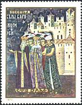
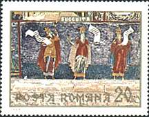
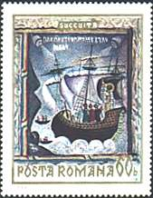
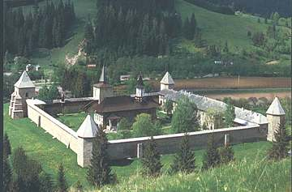
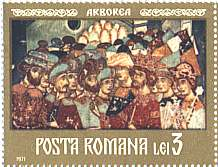
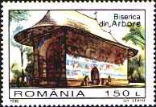
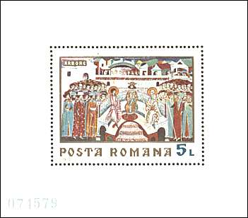
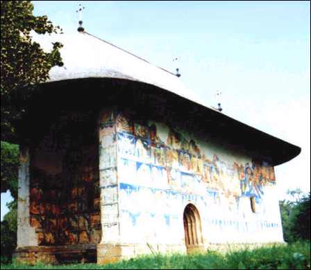

|
From the
Sucevita Monastery |
Sucevita
is chronologically the last and greatest monastic ensemble among the painted monasteries in Bukovina, as it has the appearance of a real fortress, with towers, buttresses and watch roads.t was erected in 1581 by Gheorghe Movila, Bishop of Radauti, and consecrated to the Assumption in 1584. Ruling prince Ieremia Movila, Gheorghe Movila's brother, added to the church two open porches (to the north and to the south); he also built massive houses, thick surrounding walls and defense towers.
The legend has it that an old woman had been working there for thirty years, carrying in her ox wagon stone for the construction of the monastery. This is the reason why a female head is carved on a black stone in the monastery's yard.
The fortress structure of the site had a defensive role; it actually prevented the mural paintings (made in 1595-1596) from serious damaging as it happened with frescoes of other painted monasteries.
Paintings at Sucevita were best preserved both on the outside and on the inside.
Frescoes are painted in purple red and blue against an emerald green background. There is plenty of gold too, taken from the art of miniature. They belong to Romanian masters of the Moldavian school of painting - Ioan the Painter and his brother Sofronie from Suceava. They have a strongly narrative character and many of them represent scenes taken from the daily life of the 16th century Moldavia.
|
 |
 |
 |
The most outstanding paintings are the Ladder of Virtue, presenting the angels who assist the righteous enter the Paradise, while sinners are punished by a grinning demon, and the Last Judgement, left unfinished because its painter fell down from the scaffoldings and died. The latter one has scenes with the Romanians' traditional enemies, the Turks, getting ready for the Last Judgement, joined by Jews, who were also considered to be pagans. Outside the porch, is to be seen the terrible vision of the Apocalypse, displaying two-headed Beasts and the traditional rivers of fire. On the south wall, there is a remarkable Tree of Jesse, displaying both the human origin of Jesus, under the form of His family tree, and His divine ascendance, as the Prayers to Holy Virgin scene is also painted nearby. Theologically, the Tree of Jesse is a symbol of the continuity between the Old and the New Testaments, as well as of the Logos before and after the arising of Jesus. The Tree in Sucevita is an evolved version, as compared to the same scene at Voronet. The Crowning of the Virgin, a theme which is not common for Byzantine art, is a sample of the Polish influence over Moldavia (due also to the Movila family's close relations to Poland); it can be also related to a syncretic vision bringing together Western and Byzantine forms of art.

Other important paintings at
Sucevita are the Siege of Constantinople (1453), and a scene
presenting the first two verses of the Genese. The Siege of
Constantinople proves the great impact this historical event had upon
Eastern civilization and culture; it gives one a notion of how the siege was
perceived and artistically rendered more than a hundred years later. The two
verses offset the divine presence in the first moments of Existence, when God
had begun to create the world.
In the nave, on the right side wall, one can see a faded
votive painting of Elisabeta, Ieremia's wife, together with her
children. Become a widow, she never saw them on the throne, as she died in a
Sultan's harem, far away from her country. Ieremia and his brother Gheorghe
are buried nearby.
The museum of the monastery holds precious objects, among which
manuscripts and embroideries donated by the Movila family. Important
restoration works were carried on between 1960 and 1970.

Situated at 30 km from Suceava, Arbore Monastery was built between the 2nd of April and the 29th of August 1503, by Luca Arbore, one of Stephen the Great’s generals, in the village of Soloca, that he owned. The monument has been consecrated to the Beheading of Saint John the Baptist. Having a rectangular plan, the church has walls made of raw stone and vaults made of brick. Smaller than other painted churches, Arbore has a gloomy narthex and a nave with large windows.
|
 |
 |
There is no steeple, as it was built by a landowner, and not by a ruling prince. It has remarkable fresco exterior and interior paintings against a predominant green background, unlike Voronet, where blue predominates. The green is in five shadows and 47 hues combined with red, blue, yellow, pink and ochre. The secret of combining colors was kept by Moldavian master painters to their grave, and is now lost in the mist of time. However, scientists were able to identify thirty substances, including animal size, vinegar, egg, gall and hone

The paintings were made by a team led by Dragos Coman from Iasi. Most of them represent scenes taken from the Genesis and the Saints’ lives. They are delicate and vivid, whereas houses are drawn in perspective. The best preserved frescoes are found on the relatively sheltered south and west walls. Among the most valuable scenes one may see are The Hymn of the Prayers to the Virgin, The Siege of Constantinople, The Last Judgement, The Prodigal Son and many others. The Siege of Constantinople is a syncretic representation of the attacks of Persians, Avars and Slaves upon Constantinople in 617.

The two heavy slabs of stone preserved near the church since the time it was painted have fifteen small holes which used to serve as containers for the mixing of colours, thus providing the large display of shades used by Moldavian painters. In the narthex one may find the tombs of the church founders, i.e. Luca Arbore and his wife, Iuliana. Inside the monastery, an ethnographic museum with a rich display of the region's most valuable assets is worth visiting. The monastery was restored between 1909-1914 and 1936-1937, and is a UNESCO protected site. (
Background: Voronet Monastery, outer wall painting.
Links to other Monastery Frescoes pages: Introduction, Voronet, Moldovita
| Published:
07/01/01. Revised:
01/02/06.
Copyright © 1999 - 2001 by Victor Manta, Switzerland. All rights reserved in all countries. |